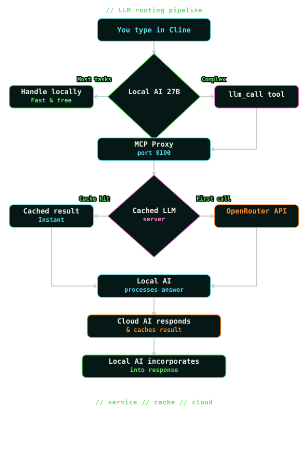

Background
NymphsCore started from a very practical frustration: everyone has jumped on the AI bandwagon, and a lot of creative tooling now sits behind metered credits, subscriptions, or token systems. That can be fine for some jobs, but it is a bad fit for messy game-development iteration, where you need to explore, reroll, test, discard, and try again without feeling a counter ticking down every time you chase a better reference, mesh, texture, or idea.
For us, that frustration came from a real need to iterate game assets quickly. We wanted to move from idea, to reference image, to draft mesh, to texture direction, to another variation without the whole session turning into setup work or a running bill. Game development is messy by nature: you explore, reroll, test, discard, kitbash, and try again until something finally starts to feel useful.
The other route is going fully local through powerful tools like ComfyUI, but that path can become its own technical discipline. The workflows themselves can get complicated fast: node graphs, model folders, custom nodes, CUDA issues, Python environments, launch scripts, ports, logs, and one-off fixes are all real work. For artists and small teams, the point is not to become a backend engineer before making the next prop or character.
The reason for NymphsCore is to make local AI pipelines feel like one managed creative system instead of a pile of fragile setup notes. The Windows Manager prepares a dedicated WSL runtime, installs modules, fetches model weights, starts services, checks logs, runs smoke tests, and gives each workflow a repair path. Modules can be added or removed in a few clicks, and new modules or workflows can appear in the Manager when they become available. The artist should be able to focus on the next useful output: a reference image, a draft mesh, a texture pass, a trained LoRA, a worldbuilding note, or a local assistant response.
Keeping the work local also keeps private projects private. Prompts, references, experimental characters, client work, unreleased game ideas, and half-formed worlds do not need to be uploaded just to see whether an idea has legs, and they are not quietly used to train someone else's model. As open-weight models keep evolving, NymphsCore is meant to evolve with them: more tried-and-tested backend modules for cutting-edge open-source solutions are already on the roadmap, giving artists a curated way to stay near the edge without rebuilding the whole pipeline every time the next useful model appears.
That is why NymphsCore sits underneath the Nymphs creative tools. Blender is the first full client, because it is where a lot of game asset iteration already happens, but the core idea is bigger than one addon: keep the heavy AI stack local, organized, inspectable, and reusable, then bring it into the creative software where the work is already taking place.
Managed runtime
The Manager creates a dedicated NymphsCore WSL distro and Linux user so the AI stack stays isolated from normal Windows installs. That managed runtime is where CUDA support, Python environments, module repos, model caches, launch scripts, and local services live.
Base Runtime: WSL readiness, install/repair, system packages, scripts, and shared runtime layout.Module lifecycle: install, update, repair, uninstall, data cleanup, start, stop, status, logs, and module-owned UI actions.Model handling: module-specific model fetch flows, Hugging Face token handling, cached model folders, and output folders.Diagnostics: system checks, runtime monitor, GPU/VRAM signals, logs, smoke tests, and repeatable repair paths.
Modules
NymphsCore modules are focused capability packs owned by their own manifests and scripts. The Manager discovers each module, installs it into the managed WSL runtime, runs its start/stop/status/log actions, and exposes any module-owned model fetch or workflow controls.
Z-Image Turbo for local reference and guide-image generation.TRELLIS.2 for image-to-3D, texture, and retexture workflows.LoRA, Nymphs Brain, and WORBI are separate workflows. Install them only if you want training, local assistant tools, worldbuilding, Brain-assisted LoRA captioning, or future MCP-driven creative flows.Large modules can have separate install and model-fetch steps. Install prepares the code and runtime; model fetch downloads the large weights and support files. That keeps the base runtime smaller and makes disk use, repairs, logs, and retained data clearer per workflow.
Creative clients
The Blender addon is the current main client. It talks to the managed local services from Blender's sidebar so artists can generate references, use prompt/object/style presets, send selected images into shape and texture workflows, import draft meshes, and retexture selected objects inside the scene.
The wider direction is to keep building curated local AI pipelines that can be brought into creative and game-dev software without each tool needing its own backend setup. Blender comes first; the runtime is designed so future addons or plugins can call the same managed system.
// NYMPHSCORE MANAGER
Intro
NymphsCore Manager powers the curated local AI pipelines for game development. It is the Windows setup, repair, and diagnostics app for the local NymphsCore runtime, creating a dedicated NymphsCore WSL distro, installing registry modules, preparing CUDA and Python environments, downloading model weights, running smoke tests, streaming logs, and exposing module controls so the AI stack can run locally without hand-building servers and environments.
That managed runtime is used by multiple Nymphs workflows: Z-Image Turbo for local image generation, TRELLIS.2 and Pixal3D for image-to-3D work, LoRA for Z-Image training, WORBI for local-first worldbuilding, and optional Brain services for local LLM, Open WebUI, and MCP tooling. The Blender addon is the current creative client for some of these services, and the platform is constantly evolving toward bringing curated AI pipelines directly inside future creative software and game engines, including possible Godot, Unity, or Unreal integrations, without forcing artists into complex node-based workflow tools.
What is WSL?
WSL means Windows Subsystem for Linux. WSL 2 lets Windows run a real Linux environment, which is where NymphsCore keeps the CUDA, Python, model, and service stack used by the AI pipeline. The Manager creates a dedicated distro named NymphsCore so that stack stays isolated from normal Windows folders and other Python or CUDA installs.
NymphsCore WSL 2 environmentSystem needs
GPU and VRAM matter. The Manager can offer lower-load choices such as smaller TRELLIS.2 GGUF quants or lighter Z-Image weights, but the public workflow should be treated as a serious local AI stack, not a lightweight plugin.
Footprint
At a glance, ranges mean install size + lightest weight fetch through install size + all weight fetches. Complete package cards show a single total instead. The small label shows the install-only size before model or training-weight fetches where that split applies. Generated outputs, logs, project data, datasets, and temporary install files grow separately.
Z-Image Turbo
LoRA
TRELLIS.2
Pixal3D
Nymphs-Brain
WORBI
Base Runtime
The ranges include the installed module root where that is available locally: ~/Z-Image is about 5.4 GB, ~/TRELLIS.2 is about 8.7 GB, ~/Pixal3D is about 158 MB, ~/Nymphs-Brain is about 16 GB, and ~/worbi is about 34 MB. Base Runtime is a lightweight Ubuntu WSL base finalized with shell paths, base Ubuntu packages, Python tooling, and cuda-toolkit-13-0. Module runtimes and model downloads are separate.
Install Manager
- Download
NymphsCoreManager-win-x64.zip. - Extract the zip to a normal Windows folder.
- Run
NymphsCoreManager.exefrom the extracted folder. - If Windows SmartScreen appears, use
More info, thenRun anyway.

More info.
Run anyway.Manager layout
The Manager window can be resized. If a page looks cut off, expand the window or scroll the main content area before assuming a control is missing.
Homeshows system overview cards and available module cards.Base Runtimeis where the managed WSL distro is installed or repaired.Logsshows recent Manager activity and install output.- Module cards open module pages for install, repair, model fetch, logs, and module-specific actions.
- The left runtime monitor shows WSL, CPU, disk, GPU, and refresh status while the Manager is open.
Monitoropens the compact runtime monitor view.Dev Modeexposes developer-focused controls and extra status information. Leave it off unless you are debugging.- On module detail pages, clicking the module logo hides or restores the left sidebar for more working space.
System checks
Open System Checks before installing the Base Runtime. This page checks whether the Manager can run elevated, see usable install drives, reach WSL, detect existing WSL distros, and see the NVIDIA driver.
// NYMPHSCORE MANAGER
Install WSL Base Distro
The base distro is the managed WSL environment used by NymphsCore. Install or repair it before adding modules.
Order
- Open
Base Runtimein the Manager. - Check
Current State. - If Windows WSL is not ready, run the WSL setup action first and restart Windows if asked.
- Choose an install drive.
- Run
Install Base RuntimeorRepair Base Runtime. - Return Home and install modules from their cards.
NymphsCore// MODULES
Z-Image Turbo
Z-Image Turbo
Range includes the installed ~/Z-Image runtime, about 5.4 GB locally, plus the base model and selected Nunchaku weight through all supported Nunchaku weights.
Z-Image Turbo is the Blender addon's local image-generation module. It runs a FastAPI service for txt2img and img2img on the managed WSL runtime, writing outputs under the shared NymphsData folders instead of sending prompts or images to a remote generation service.
Nunchaku is the optimized low-bit runtime used to run Z-Image Turbo locally with lower VRAM and faster inference. It uses quantized Z-Image Turbo weights, which are smaller/faster runtime versions of the model for local generation. NymphNerds forks Nunchaku so the Blender workflow can go beyond basic text-to-image: guide-image editing and LoRAs trained with the LoRA AI Toolkit module can be used through the same local runtime.
In the Blender addon, Z-Image Turbo powers the Nymphs Image panel. Use it to create concept art, texture ideas, reference images, guide-image variations, or source images that can then be sent into 3D workflows such as TRELLIS.2.
Install from Manager
Install Z-Image Turbo from the Manager after the Base Runtime is ready. The install step prepares ~/Z-Image and its Nunchaku runtime; the model files are fetched separately from the installed module page.
- Install
Z-Image Turbofrom the Manager. - Wait for the install to finish and the module page to become available.
- Do not fetch weights until the module install has completed.
- Module install prepares the runtime first.
- Model Fetch runs after install because it uses the installed module page and fetch tools.
This install can take a while. It may add Python 3.11 support, prepare CUDA Toolkit 13.0 for nvcc, build a staged .venv-nunchaku, install Torch, Diffusers, and the NymphNerds Nunchaku fork, then validate text-to-image, image-to-image, and LoRA runtime hooks.
Fetch models
After Z-Image Turbo is installed, open its module page and use Model Fetch to download the actual model files.
- Choose a Download option. Use the recommended weight, or
All weightsif you want Blender to switch presets later. - Add a
Hugging Face tokenonly if your download needs one. - Click Fetch Models to download the base model and selected quantized weight.
- Use Smoke Test or Start before generating from Blender.
Source links
// MODULES
TRELLIS.2
TRELLIS.2
Range includes the installed ~/TRELLIS.2 runtime, about 8.7 GB locally, plus the smallest practical GGUF set through all quants, including shared support files.
TRELLIS.2 is the Blender addon's local 3D module. It turns a source image into a draft 3D asset and supports texture and retexture workflows through the managed TRELLIS.2 GGUF backend.
The module combines Microsoft's TRELLIS.2 source, a NymphsCore local HTTP adapter, GGUF model loading through ComfyUI-Trellis2-GGUF, and module-owned scripts for install, start, stop, status, logs, model fetch, smoke test, and uninstall.
Install prepares the runtime under ~/TRELLIS.2. Fetch Models downloads the selected Aero-Ex/Trellis2-GGUF quant bundle, shared support files, the required microsoft/TRELLIS.2-4B support checkpoint, and the rembg u2net background-removal model.
Q5_K_Mis the normal starting point for most GPUs.Q4_K_Mis the smallest first proof test or tighter-VRAM option.Q6_KandQ8_0are heavier quality-focused choices when the machine has enough headroom.All quantsis optional and useful only if you want the addon/backend to switch between every supported GGUF later.
// MODULES
Pixal3D
Pixal3D
Pixal3D generates textured 3D assets from a single image. It is a separate 3D backend with its own runtime, model fetch options, Blender API service, and local Gradio view.
The installed Pixal3D runtime is separate from its model downloads. On the current local install, ~/Pixal3D is about 158 MB before model weights, generated outputs, logs, and profile data.
Install sets up the Pixal3D runtime. Fetch Models downloads the model assets into shared NymphsData caches. The card range starts with the installed runtime plus the lightest GGUF download set. The normal safetensors profiles are about 30 GB including Pixal3D checkpoints and auxiliary model repos; downloading all Pixal3D safetensors and GGUF weight sets can reach about 55 GB with the installed module.
Use Low VRAM 1024 as the first test profile. Standard 1536 is heavier. The quantized options are about 5.4 GB for GGUF Q5_K_M, 6.1 GB for GGUF Q6_K, and 7.4 GB for GGUF Q8_0; current generation still uses safetensors until Pixal3D's GGUF loader bridge is implemented.
Start API starts the Blender-facing service on port 8096. Open Gradio launches the local Pixal3D Gradio app on port 8097.
briaai/RMBG-2.0, which is gated on Hugging Face and requires accepting BRIA's access form with the same account as the token.Source links
// MODULES
Nymphs Brain
Nymphs Brain
The installed Brain runtime is about 16 GB locally before a local LLM. The selected local model is the main variable cost and can add several to tens of GB.
Nymphs Brain is an optional local assistant and tool-orchestration module. It is not required for the Blender addon baseline, and the installer does not need to download a chat model before the rest of NymphsCore can work.
The current Brain module uses LM Studio CLI for model download and selection, then serves the selected GGUF through a CUDA-enabled llama-server on port 8000. Brain also installs Open WebUI, an MCP gateway, the mcpo OpenAPI bridge, and tool bridges for filesystem, memory, web-forager, context7, optional remote LLM wrapper workflows, and future Blender-side flows over the in-progress MCP layer.
- Start Brain starts the local model server only if a model has been configured, then starts the MCP tool stack.
- Manage Models opens the installed
lms-modelterminal flow for local model selection, context length, and optional remote wrapper model selection. - With a suitable local vision model configured, Brain can help the LoRA module draft image captions for training datasets.
- Open WebUI is its own Manager action and local WebView/browser surface on port
8081. MCPruns on port8100, whilemcpoexposes OpenAPI tool routes on port8099for Open WebUI and other clients.- The MCP layer is the planned bridge for future Blender workflows where local assistant/tool actions can coordinate with creative-client context.
- An optional OpenRouter key enables the cached
llm-wrappertool; without a key, Brain skips that wrapper and keeps the local stack usable. - Normal uninstall removes runtime/program files but preserves models, Open WebUI data, MCP config/data, secrets, and logs unless purge or data-delete is chosen.
Cached llm-wrapper
llm-wrapper is Brain's optional remote-model bridge. It lets the local Brain stack hand a single hard prompt to an OpenRouter model, cache the answer locally, and return the result through the same MCP and Open WebUI tool path. It is for selective delegation, not replacing the local model.
OpenRouter key, click Apply Key, then use Manage Models to choose the remote llm-wrapper model.deepseek/deepseek-chat until changed in Manage Models or in ~/Nymphs-Brain/secrets/llm-wrapper.env.When enabled, Brain exposes the wrapper through MCP on http://127.0.0.1:8100/servers/llm-wrapper/mcp and through mcpo/OpenAPI on http://127.0.0.1:8099/llm-wrapper. Open WebUI can then see it as a Brain tool route alongside filesystem, memory, web-forager, and context7.

The wrapper runtime is ~/Nymphs-Brain/local-tools/remote_llm_mcp/cached_llm_mcp_server.py. Its prompt cache lives at ~/Nymphs-Brain/mcp/data/llm_cache/prompt_cache.sqlite, with a default 3600 second cache TTL and 120 second OpenRouter timeout.
Direct test after Brain is running: curl -s http://127.0.0.1:8099/llm-wrapper/llm_call -H 'Content-Type: application/json' -d '{"prompt":"Reply with exactly DIRECT_WRAPPER_TEST_OK and nothing else."}'. Running the same prompt again should normally return from cache.
Source links
// MODULES
WORBI
WORBI
WORBI has no required model weights, but the installed app/archive is still MB-scale. Worlds, notes, exports, and logs grow separately.
WORBI is an optional local-first worldbuilding workspace. It is packaged as a Nymph module so writers, solo creators, and game teams can keep lore, characters, locations, timelines, notes, and project planning inside the managed local system.
WORBI runs as a browser-based local app from the managed WSL runtime, normally on port 8082. It can work with the Nymphs Brain local AI stack when Brain is installed, while still keeping the worldbuilding workspace local-first.
The Manager handles install, start, open, stop, status, logs, and data-folder access, while WORBI itself owns the deeper worldbuilding UI in the browser.
Normal uninstall keeps WORBI project data, config, and logs unless the separate data-delete path is used.
// MODULES
LoRA
LoRA
LoRA is a complete training package around Z-Image Turbo and the training adapter. Datasets, jobs, logs, and finished LoRA outputs grow separately.
LoRA is the optional Z-Image Turbo training module. It trains small .safetensors files for a character, outfit, object, style, or subject, then those files can be used in Z-Image generation without replacing the base model.
The module installs under ~/LoRA. It manages an isolated AI Toolkit sidecar, the Easy LoRA Manager UI, the advanced AI Toolkit UI, queue support, datasets, jobs, logs, model assets, training adapters, and finished LoRA outputs.
~/LoRA contains AI Toolkit, local Node 20, run files, config, jobs, logs, datasets, and outputs..safetensors files live under ~/LoRA/loras.http://127.0.0.1:8675.First-time setup
Install prepares the trainer application and tools only. Fetch Training Assets is a separate action because the training model and adapter are large. Run it once before the first training job; it downloads or resumes Tongyi-MAI/Z-Image-Turbo and ostris/zimage_turbo_training_adapter.
Easy LoRA training flow
Easy LoRA is the normal starting point. The LoRA name becomes the dataset folder name, the AI Toolkit job name, and the finished output name, so use a short readable name.
metadata.csv for editable captions. Add Job mirrors these captions into per-image .txt sidecars for AI Toolkit.Training settings
Fast Test: 500 steps, no checkpoints,1e-4learning rate, rank8. Use it as a quick pipeline and dataset check.Baseline: 3000 steps, 4 checkpoints,1e-4learning rate, rank16. This is the normal first run.Style: 3000 steps, 4 checkpoints,1e-4learning rate, rank16, tuned for style training.Strong Style: 5000 steps, 4 checkpoints,1e-4learning rate, rank16. Use it when the normal style run is too weak.v1 (Recommended)is the safe training adapter default.v2 (Experimental)is only for comparison after the normal path works.Low VRAM modeis slower, but can help when the normal settings do not fit comfortably on the GPU.
Add Job, then Start Job
.txt sidecars, writes the AI Toolkit YAML job, writes LoRA metadata, and registers or updates the job.Results and testing
Use Refresh, the progress bar, live log, samples, and checkpoints to judge the run. Open LoRAs opens the folder containing finished .safetensors files and saved checkpoints.
For the first test, use the finished LoRA in Z-Image with a normal prompt before changing several settings at once. If the result is weak, compare checkpoints and LoRA strength. If it is overfit, check the dataset and captions before running a stronger preset.
Open AI Toolkit is for the full upstream training interface. Use it when you need advanced AI Toolkit controls; otherwise, the Easy LoRA flow is the intended path.
Normal uninstall removes the trainer runtime but preserves datasets, jobs, outputs, logs, models, and adapters. Delete Data is the separate wipe path for saved LoRA module data.
Download and use LoRAs
You do not have to train every LoRA yourself. Download compatible Z-Image Turbo LoRA .safetensors files from Civitai, Hugging Face, or another trusted source, then place the files directly in ~/LoRA/loras.
Training creates named run folders under the same root, for example ~/LoRA/loras/my_first_lora/my_first_lora.safetensors. Downloaded LoRA files sit beside those folders, not inside a new training run folder. The Blender workflow reads LoRAs from ~/LoRA/loras whether they were trained locally or added manually.
VPN help note: Civitai is a common place to find community Z-Image Turbo LoRAs, but it may not load normally in some regions. If you are in the UK or Australia and the site is unavailable, a VPN may help; follow local rules where you are.
Source links
// MODULE AUTHORS
Community module standard
The public contract for community modules is the Nymphs Module Making Guide. Treat this wiki section as a quick reference only. If this page and the guide disagree, the guide wins.
A Nymph module is a separate product that plugs into the managed NymphsCore WSL runtime through a registry entry, an installed nymph.json, and declared lifecycle entrypoints. The Manager should stay generic; modules own their own workflows.
category/kind, install root, channel, sort order, and packaging.nymph.json at the repo or package root. It declares install.root, entrypoints, UI actions, artifacts, uninstall behavior, and version metadata.scripts/, and put optional installed UI under ui/..nymph-module-version. A folder existing is not enough.nymph.json and write .nymph-module-version last, after dependencies and files are ready.Manager and module boundary
Status contract
Every status action should be fast, timeout-safe, missing-file-safe, and newline key=value based. Recommended keys include id, installed, runtime_present, data_present, version, running, state, health, install_root, logs_dir, last_log, marker, and detail.
available, installed, and running for ordinary card states. A stopped installed service is not an error.model_download_needed, needs_assets, or needs_brain for expected missing downloads, datasets, or dependencies.repair_needed for marker/source-root repair cases. Reserve needs_attention for genuinely broken runtimes, wrappers, imports, or impossible core operation.weight_profile_* keys plus models_ready or aux_models_ready. The Manager should show short cached-weight text, not scan model caches.Registry and manifest rule
Keep display classification separate from installation mechanics. category and kind tell users what the module is, such as image, 3D, training, service, or tool. packaging only tells the Manager how it installs, such as repo or archive. Use install.root for the canonical installed product folder; legacy lowercase roots are only fallbacks.
UI and action boundary
Installed modules can expose controls through the installed manifest. The Manager reads these only from the installed module folder, never from a remote registry preview. If an installed UI file is absent or invalid, the custom UI button should hide rather than fail loudly.
ui.manager_actions for installed module buttons such as Start, Stop, Logs, Smoke Test, Open Project, Train, or Export.ui.manager_action_groups for compact model fetch controls, token entry, source links, runtime selectors, and one submit action. Do not duplicate a grouped action as a normal button.ui.manager_ui with type=local_html for installed HTML or type=local_url for loopback services. A local_url start action must be idempotent and print the URL.nymphs-module-action:// so the Manager shows standard logs. Short status/log polling may use the validated WebView2 message bridge.Model fetch, data, and shutdown
Install should prepare runtime code; model downloads belong in explicit actions such as Fetch Models. Model fetch scripts should print readable MODEL FETCH STATUS progress with standard values such as this_repo_cache and active_download_files, use bounded retries, prevent parallel duplicate downloads, and let status clear stale fetch feedback once assets are ready.
Uninstall removes runtime files while preserving declared user data by default. Purge or Delete Data may remove only module-declared scopes. Never guess broad paths, and do not blindly delete shared caches such as $HOME/NymphsData/cache/huggingface.
Lifecycle jobs must stay inside the Manager-launched process tree. Do not use nohup, disown, detached setsid, or untracked background workers for install, update, repair, uninstall, fetch, or smoke-test jobs. If a script starts children, trap TERM and INT and clean them up. Backend start actions may leave a service running only when stop can cleanly terminate it.
Release and test order
Push the module repo first, verify the raw nymph.json URL, then update the registry only if catalog metadata changed. Before asking for registry inclusion, test clean install, status before/during/after install, closing the Manager during install, start/stop/open/logs, custom UI visibility, action bridge behavior, uninstall preservation, reinstall, failed install without a marker, and purge/delete-data scope.
Source links
// BLENDER
The Nymphs Blender addon is the current creative client for NymphsCore. It gives Blender a direct control surface for the managed local AI runtime, so asset drafts can move from prompt, to reference image, to generated mesh, to texture pass without leaving the scene or hand-running backend servers.
This matters because draft asset work is iterative. You can keep a model or scene open, generate visual directions from object and style presets, reuse the strongest image as a source, import the resulting mesh back into Blender, select a result, run another texture pass, and inspect saved outputs and metadata from the same sidebar.
The heavy work still happens in the Manager-installed NymphsCore WSL runtime. The addon starts and checks the local services, sends requests to the image and 3D modules, imports returned assets, and keeps status, progress, GPU/VRAM signals, folders, and repair-friendly runtime controls where the artist is already working.
Install through Blender
After testing, the addon is planned to be available through Superhive for the normal public install path.
// BLENDER
Server Panel
Nymphs Server is the addon control panel for the managed local runtimes. It shows the current backend state, active services, image backend, running job, progress, and GPU/VRAM telemetry when available.
80908094Runtimesstarts, stops, refreshes, or stops all managed services from Blender.Config Detailsexposes service ports, backend paths, loaded model/runtime summaries, and live job details for repair or developer machines.Advancedshows the WSL distro/user target, API root, runtime guidance, terminal launch option, and GPU refresh tools.
Use this panel when Blender needs to know whether the backend is ready, launching, busy, or stopped. It is also the safest place to stop unused runtimes before switching tasks or freeing VRAM.
// BLENDER
Image Panel
Nymphs Image creates the reference images that drive the rest of the Blender workflow. It supports local Z-Image generation from the managed runtime and Gemini Flash generation through OpenRouter when online access is enabled.
Z-Imagehandles local text-to-image, variants, seeds, generation profiles, size, steps, guidance, and image-to-image from a picked guide image.Gemini Flashsupports OpenRouter-backed image generation, guide images, aspect ratio controls, and the character part extraction workflow.- Subject presets, style presets, saved prompts, editor tools, quick edit, preview, and preset folders keep prompt work reusable instead of buried in one-off text boxes.
Image Part Extractioncan plan and generate separate references for base body, clothing, hair, accessories, weapons, props, face choices, and optional eyeball parts from one master character image.- Generated images and metadata can be opened or cleared from the panel, so reference output stays reachable while working in Blender.
The image panel is where the visual direction starts: prompt, preset, style, guide image, or master character reference first, then use the strongest output as the source for shape, texture, or modular part work.
// BLENDER
Shape Panel
Nymphs Shape turns one chosen reference image into an imported Blender mesh through the TRELLIS.2 runtime. It is the main image-to-3D lane for draft asset creation.
Auto Remove Backgroundis available for normal plain-background references.Generate Shapecreates the mesh;Generate Shape + Textureasks TRELLIS.2 for the first texture pass too.- Presets cover common TRELLIS.2 settings, while advanced controls expose resolution, seed, token budget, structure pass, shape pass, texture pass, export faces, remesh, and texture size.
- The latest generated mesh is imported into the current Blender scene and recorded under the addon shape output folder.
Use this panel once an image is strong enough to become a draft object. The goal is not final production topology; it is a fast, inspectable mesh and texture direction inside the same Blender project.
// BLENDER
Texture Panel
Nymphs Texture retextures an existing selected mesh with a guidance image through TRELLIS.2. It is useful when the shape is acceptable but the surface needs a different visual direction or another pass.
- Leave
Auto Remove Backgroundon for normal references. - Control texture resolution, texture size, seed, steps, image-follow strength, decimation, and advanced GGUF texture options where available.
Retexture Selected Meshsends the selected object and guidance image to the local runtime, then imports the result back near the source transform when possible.
This lets texture iteration happen on the asset you are already looking at, instead of exporting to a separate tool, rebuilding context, and manually reconnecting the result.
// FEEDBACK
// Send feedback
Use this for bug reports, confusing install steps, addon issues, documentation gaps, or feature ideas. Include what you tried, what you expected, what happened, and any logs or screenshots if you have them.